What is ARES?
ARES is a 30-pound combat robot competing in the National Havoc Robotics League (NHRL). Its primary weapon is a precision-machined S7 tool steel beater bar, designed with mass concentrated toward its outer edges to maximize rotational inertia and deliver substantial kinetic energy upon impact. The rest of the robot serves as a durable, high-speed platform, maneuvering to deliver weapon strikes while evading and defending against opposing attacks.
ARES in competition
My Work / Contributions
Since joining the ARES team in January 2026, I have designed and implemented several components for the robot.
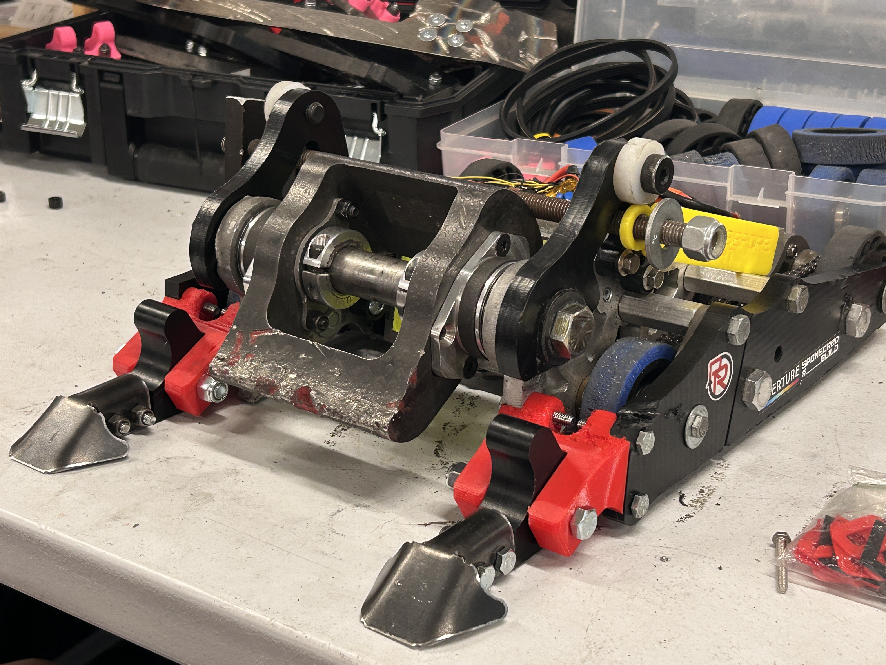
Anti-Drum Forks
Wide vertical spinners, commonly known as beaters or drums, are becoming increasingly prevalent in combat robotics due to their ability to deliver significant kinetic energy upon impact. One effective countermeasure is to deflect these impacts back into the opposing weapon using sloped, metal-tipped forks. I designed these forks from A36 steel, using a hydraulic press brake to form the angled profiles needed to counter these powerful weapons and withstand repeated impacts. The steel tips are mounted to more compliant UHMW extensions, reducing weight while remaining protected by the steel contact surfaces.
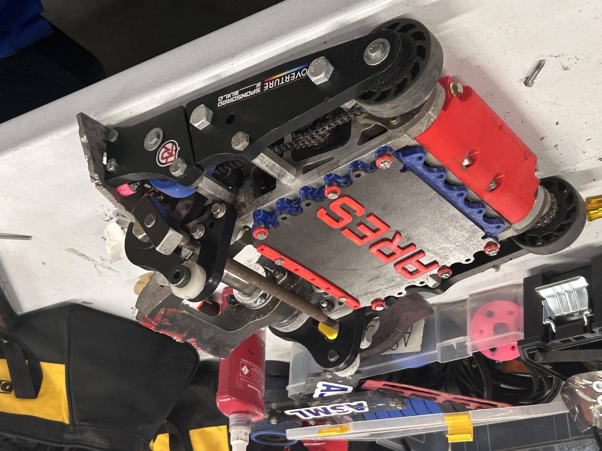
AR500 Heavy Top Armor
Another increasingly common threat in combat robotics is the hammersaw, which combines a smaller spinning weapon with a hammer mechanism to precisely direct strikes onto the tops of opposing robots. These attacks can damage vulnerable internal components that are otherwise well protected, including the lithium-polymer batteries that power the robot.
To prepare for these matchups, I designed a new top armor configuration for ARES using 1/8-inch AR500 steel to protect its internal components against penetrating strikes. This design proved particularly effective during our first fight in October 2026, when we faced two hammersaws simultaneously and emerged relatively unscathed.
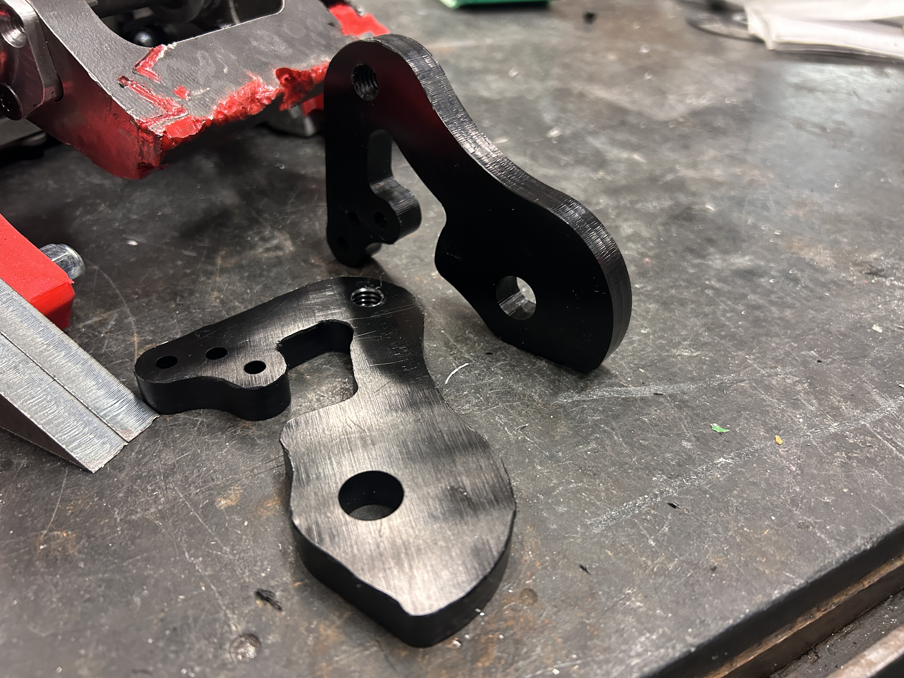
UHMW Inverted Drive Ears
One issue ARES experienced at previous competitions was with its inverted driving system. When facing robots with horizontal spinners or competing in more chaotic fights, the inverted drive "ears" mounted atop the robot were prone to breaking. In some cases, the broken pieces would fall into the weapon mechanism, jamming it entirely and making self-righting more difficult. To address this, I redesigned the ears to sit much deeper within ARES, moving them out of the primary impact zone and reducing the likelihood of debris interfering with the weapon. I then CNC-machined the redesigned components in-house, improving their integration with the existing chassis and helping ARES maintain reliable driving and weapon operation throughout a fight.
Performance at Competition
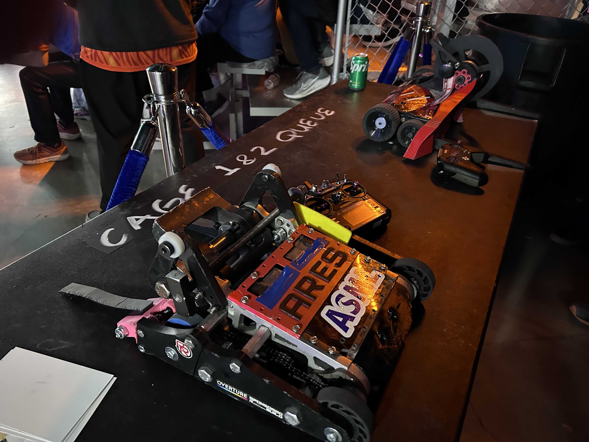
Results:
March 2026: Quarter-Finalist
April 2026: Finalist
October 2026: Semi-Finalist
Lifetime Match Record: 27 Wins, 13 Losses
CURRENT CONCLUSION
ARES has had a great year so far! Through designing and implementing several key modifications, I have helped improve the robot's durability and reliability while learning from the failures and challenges we've encountered along the way. As we prepare for the NHRL World Championship in December 2026, I am excited to continue refining my designs, identifying areas for improvement, and developing new modifications to give ARES an edge over the competition.
More of my Work / ARES Photos
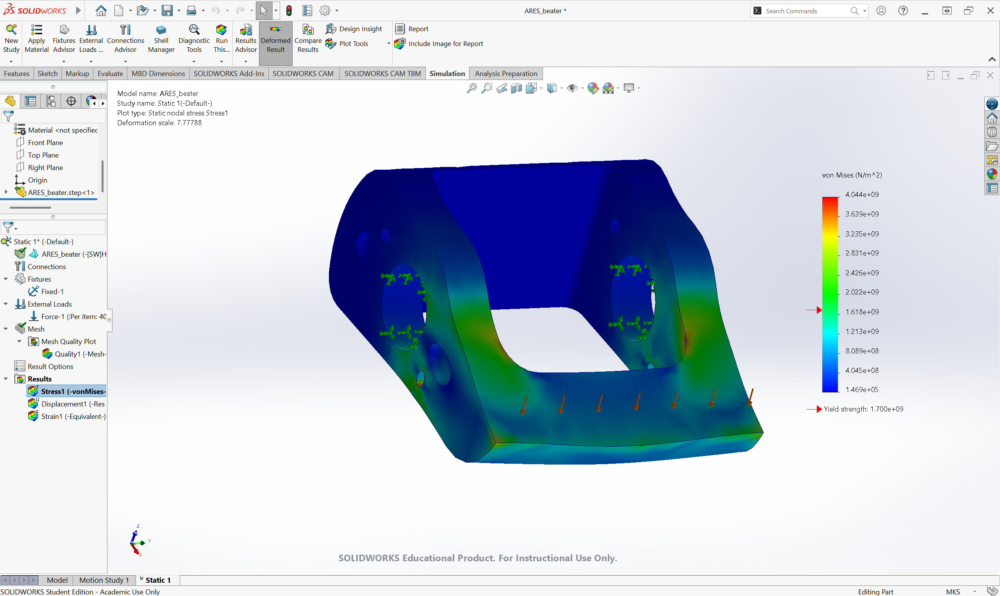
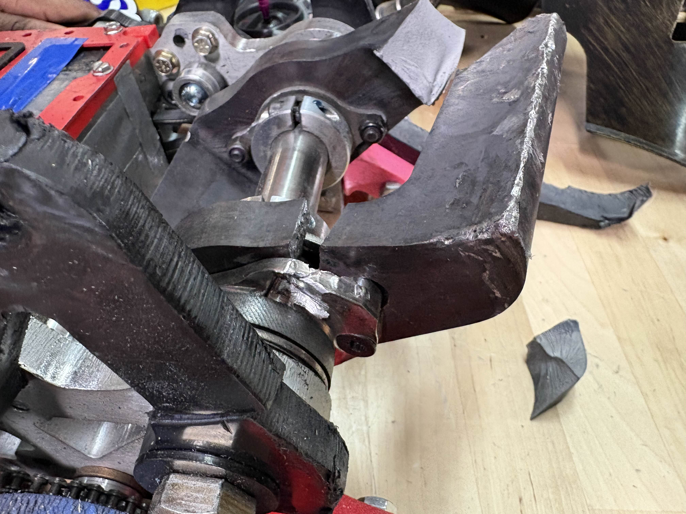
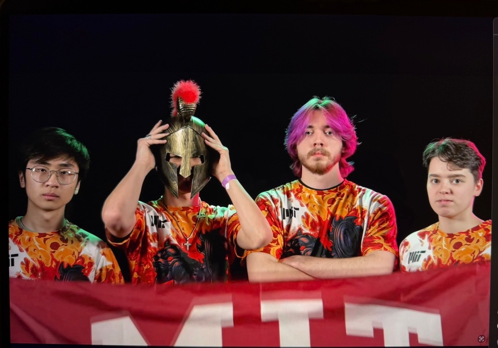
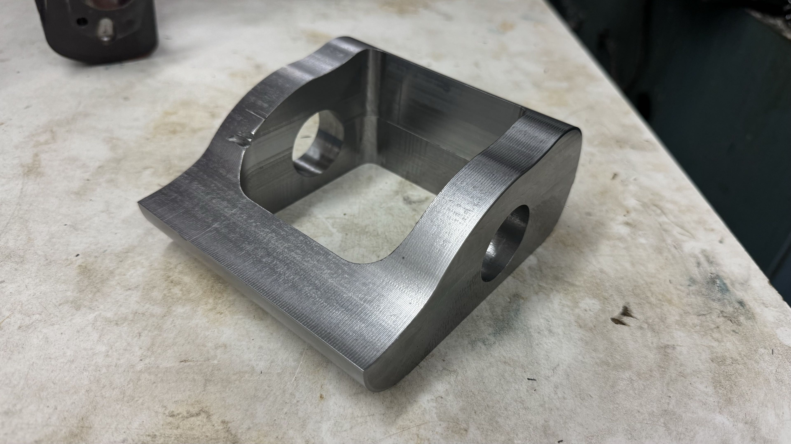
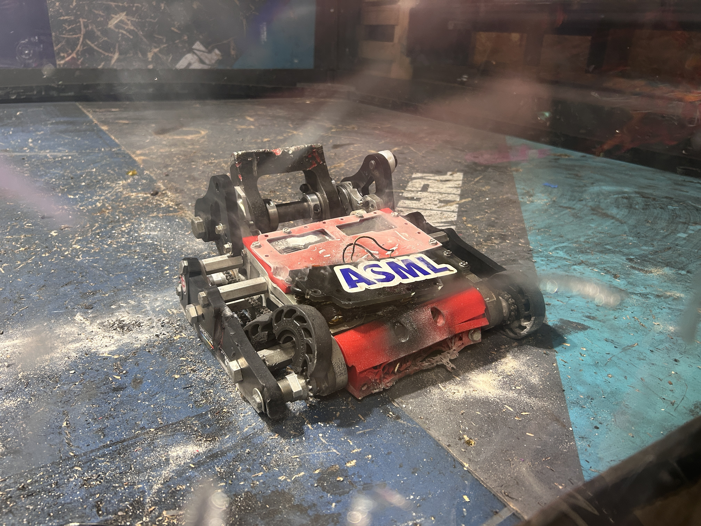
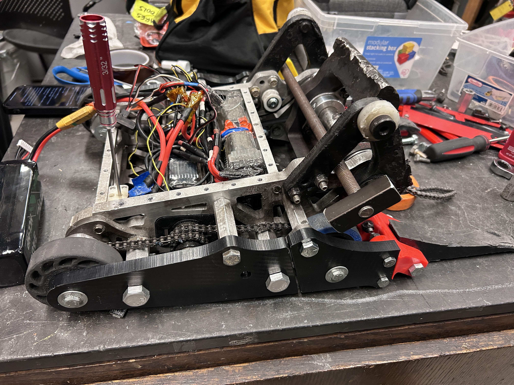
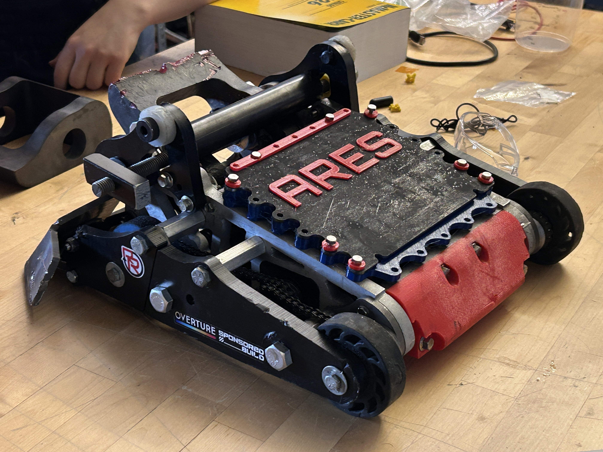
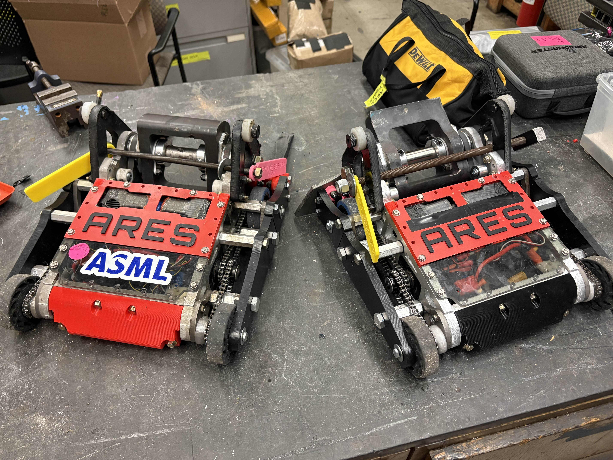
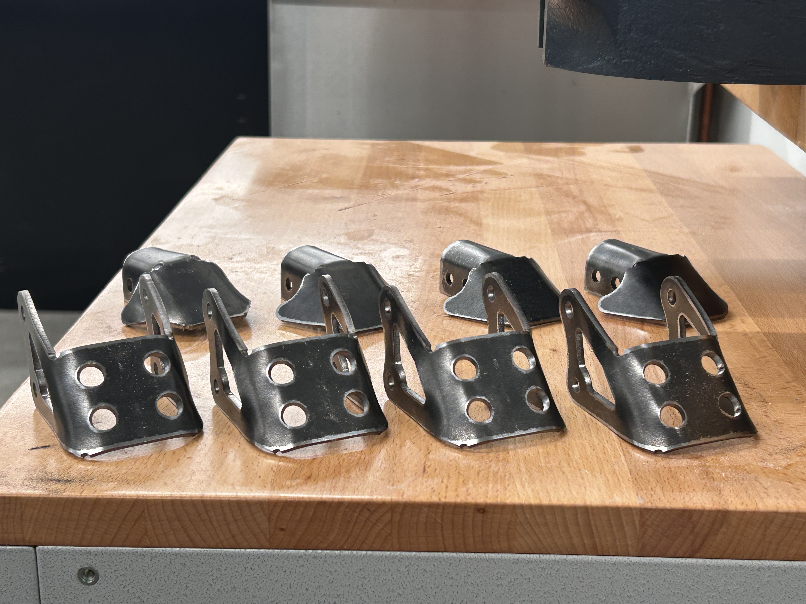